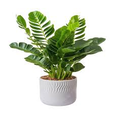

<!DOCTYPE html>
<html lang="es">

<head>
    <meta charset="UTF-8">
    <meta name="viewport" content="width=device-width, initial-scale=1.0">
    <meta name="description" content="Explore una variedad de plantas de 
    interior para su hogar u oficina">
    <link rel="stylesheet" href="/css/style.css">
    <style>
        
        body {
    margin: 0;
    background-color: #edf0ee;
}

h1 {
    margin: 0;
}

footer {

    background-color: green;
    margin: 0px;

    color: white;
    padding: px;
    text-align: center;


    position: fixed;
    left: 0px;
    bottom: 0px;

    width: 100%;


}

.titulo {
    background-color: green;
    margin: 0px;
    color: white;
    padding: 20px;
    position: fixed;
    top: 0;
    width: 100%;
}

.container-element {
    background-color: #b4b7b5;
    color: black;
    width: 300px;
    padding: 5px;
    padding-bottom: 0px;
    margin: 5px;
    border-radius: 5px;
    box-shadow: 0 4px 8px 0 rgba(0, 0, 0, 0.2), 0 6px 20px 0 rgba(0, 0, 0, 0.19);

}

.container-element img {
    width: 100%;
    height: 240px;
}

.container-element:hover {
    color: #f5f6f5;
}

.container {
    display: flex;
    flex-wrap: wrap;
    justify-content: center;
    gap: 20px;
    margin-top: 100px;
    margin-bottom: 80px;
}
        
        
        <style/>
    <title>Plantas de interior</title>

    
</head>

<body>
    <h1 class="titulo">Plantas de interior</h1>

    <div class="container">


        <div class="container-element">

            <h2>Lirio de la paz</h2>
            <p>El lirio de la paz, conocido por sus elegantes
                flores blancas, es una opción popular para espacios interiores</p>
            <p>Precio: $15</p>
            
        </div>


        <div class="container-element">

            <h2>Gema de Zanzibar</h2>
            <p>La Zanzibar Gem, con su follaje verde
                brillante, es una planta de interior que requiere poco mantenimiento,
                perfecta para principiante</p>
            <p>Precio: 20 dólares</p>
            
        </div>


        <div class="container-element">

            <h2>Gema de Zanzibar</h2>
            <p>La Zanzibar Gem, con su follaje verde
                brillante, es una planta de interior que requiere poco mantenimiento,
                perfecta para principiante</p>
            <p>Precio: 20 dólares</p>
            
        </div>

        <div class="container-element">

            <h2>Gema de Zanzibar</h2>
            <p>La Zanzibar Gem, con su follaje verde
                brillante, es una planta de interior que requiere poco mantenimiento,
                perfecta para principiante</p>
            <p>Precio: 20 dólares</p>
            
        </div>

    </div>


    <footer>
        <p>© 2023 Plantas de Interior. Todos los derechos reservados.</p>
    </footer>
</body>

</html>
